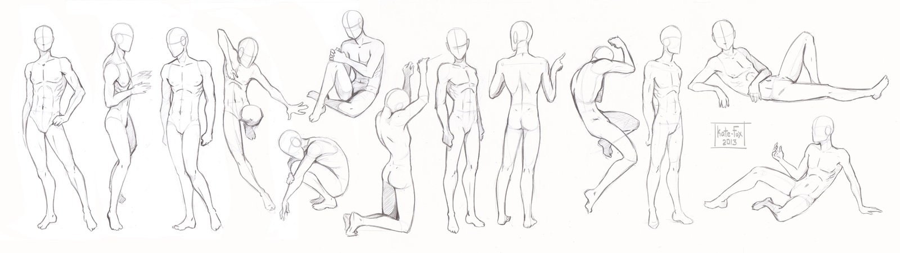
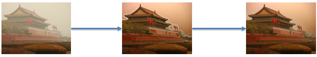

My name is Zhang Yuan, I am interested in Computer Graphics, Computer Vision and Computational Photography, especially the applications based on these technologies which can be used in movie and game industry. I got my Bachelor degree with Honor from Sichuan University in 2015. Now I am working on my Master degree in Institute of Computing Technology, Chinese Academy of Sciences, Beijing.
I share my codes and articles about Computational Photography, Computer Graphics, Puzzles, Linear Algebra and Optimizition Methods on GitHub, please feel free to contact me if you need.
Mail: zhangyuan@ict.ac.cn.
The longing for love, the search for knowledge, and unbearable pity for the suffering of mankind. These passions, like great winds, have blown me hither and thither, in a wayward course, over a great ocean of anguish. By Bertrand Russell
所谓诚其意者，毋自欺也。——《礼记》
This is my major project since the senior year in college. This project is divided into several steps, including Human Segmentation in Images, Parameterized Human Model, Model Registration based on RGB-D Camera, Pose Rerendering for Human Images
To extract human contour in still images, we propose a human contour extraction method based on skeleton matching. Skeleton key points are points representing human skeleton in images. Through skeleton key points and color information from images, using human body morphology as prior knowledge, we find optimal human contour key points corresponding to skeleton key points by constructing hidden markov model. Few human contour key points can generate reasonable human contour. Then we use hermite interpolation to connect these key points and obtain human contour. Through experiments, our method can extract reasonable human contour in simple scene, compared to previous methods, our method has a higher speed, and obtains better results in complicated scene. The article is published on ChinaVR.
I implement SIGGRAPH Paper, SCAPE: Shape Completion and Animation of People using Python. After applying Linear Regression and Principal Component Analysis, we can generate reasonable human model using parameters.
In this step, I write some codes and materials about registration algorithms, registration is an useful and interesting method used in Computer Graphics and related areas. I provide the implementation of ICP and some state-of-art registration method.
For images including human, I try to change human pose and rerender image contents. Thanks to Generative Adversarial Networks, I make some progress.
This project is my favorite work, we made a perfect camera sync method on cheap CCD camera, related paper is published on Sensors.
This project includes some materials and codes about linear algebra and its applications. For linear algebra, I recommend Matrix Analysis and Applied Linear Algebra by Carl D. Meyer, I provide some implementations of matrix decomposition methods and their corresponding applications.
This project includes some codes about ray tracing which is the foundation of video games, I provide codes to record my implementation process.
This project includes some codes about problems of Cracking the Coding Interview, I add some interesting problems and cool codes I have met.
This project includes some codes about Computational Photography projects, these projects are mainly inspired by papers on CVPR, ICCV, ECCV and SIGGRAPH. 